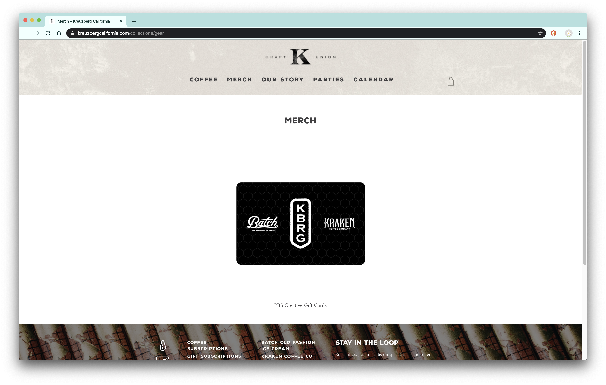
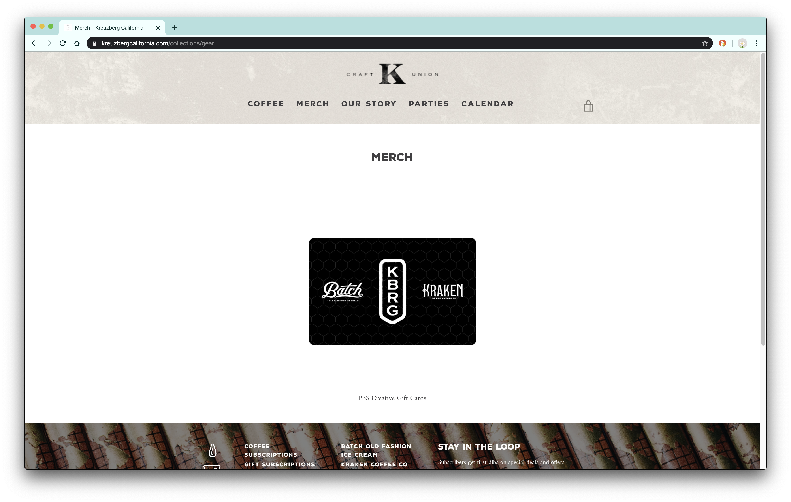

Final project proposal
Introduction
The Red Bean
A local cafe and roasting company.
Target audience
This site serves to provide information for potential patrons who want to investigate this cafe's menu, products, or business.
Those potential patrons will want to see the selection of beans this coffee shop roasts and a list of drinks made in-house, as well as information about the business such as contact information, location, and hours of operation.
Comparative analysis
Scout Coffee

Top Dog Coffee Bar


Kreuzberg Coffee Company
 

Website content
About The Red Bean
The Red Bean is located at 666 Bluebird Lane and can be called at (805) 314-1592 daily from 7am to 4pm.
[A rose in a pitcher of coffee.]
Menu
We make the following drinks, iced or hot, in-house: cappuccino, latte, mocha, nutella mocha
[A cappuccino in a cup.]
Beans
We roast our own beans in house and currently carry the following selection of light, medium, and dark roasts.
[Coffee beans of different roasts.]